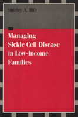

A comprehensive account of SCD and its affect on low-income families
A comprehensive account of SCD and its affect on low-income families


 A comprehensive account of SCD and its affect on low-income families
A comprehensive account of SCD and its affect on low-income families

|  |
Managing Sickle Cell Disease in Low-Income FamiliesShirley A. Hillpaper EAN: 978-1-59213-195-2 (ISBN: 1-59213-195-6) |
"Shirley Hill has written a fine and important book about the world of families with sickle cell disease (SCD). The excellent interview data presents a rich load of clear and interesting information about managing SCD in particular and about black families and illness in general."
—Peter Conrad, Brandeis University
As many as 30,000 African Americans have sickle cell disease (SCD). Though the political activism of the 1960s and a major 1970s health campaign spurred demands for testing, treatment, and education programs, little attention has been given to how families cope with SCD. This first study to give SCD a social, economic, and cultural context documents the daily lives of families living with this threatening illness. Specifically, Shirley A. Hill examines how low-income African American mothers with children suffering from this hereditary, incurable, and chronically painful disease, react to the diagnosis and manage their family's health care.
The 23 mostly single mothers Hill studies survive in an inner-city world of social inequality. Despite limited means, they actively participate, create, and define the social world they live in, their reality shaped by day-to-day caregiving. These women overcome obstacles by utilizing such viable alternatives as sharing child care with relatives within established kinship networks.
Highlighting the role of class, race, and gender in the illness experience, Hill interprets how these women reject, redefine, or modify the objective scientific facts about SCD. She acknowledges and explains the relevance of child-bearing and motherhood to African American women's identity, revealing how the revelation of the SCD trait or the diagnosis of one child often does not affect a woman's interpretation of her reproductive rights.
Excerpt available at www.temple.edu/tempress
"This comprehensive, clear, and concise study of sickle cell disease (SCD), void of jargon, can be easily understood by laypersons without detriment to its scholarly integrity. In it Hill examines the biological and social dimensions of the disease, with most of the emphasis on the latter.... Additionally, the historical and contemporary analysis presented provides further insight into other sociocultural factors that may be included in the construction of the women's social reality."
—Contemporary Sociology
Preface
1. Introduction
2. Sickle Cell Disease
3. The Mothers and Their Families
4. Diagnosing Sickle Cell Disease
5. Reproductive Decision Making
6. Caregiving for Children with SCD
7. Mediators of Caregiving Demands
8. Finding Social Support
9. Coping
10. Reconstructing SCD
Appendix: Research Strategy
Bibliography
Index
Shirley A. Hill is Associate Professor of Sociology at the University of Kansas. Her most recent book is African American Children: Socialization and Development in Families.
Sociology
Health and Health Policy
Health, Society, and Policy, edited by Sheryl Ruzek and Irving Kenneth Zola.
No longer active.
Health, Society and Policy, edited by Sheryl Ruzek and Irving Kenneth Zola, takes a critical stance with regard to health policy and medical practice, ranging broadly in subject matter. Backlist titles include books on the legal and professional status of midwifery, the experience and regulation of kidney transplants, the evolution of federal law on architectural access, and a political/ethical argument for making the community responsible for universal access to health care.
© 2015 Temple University. All Rights Reserved. This page: http://www.temple.edu/tempress/titles/1113_reg.html.